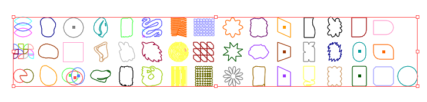
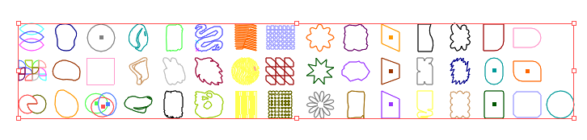

David Zar
I have been given the opportunity to create a teaser for the launch of an exciting new font called David-Zar by the Hebrew typography designers collective Alef Alef Alef
Transparant Videos
Transpanat videos are components available on Wix that can be easily dragged and dropped onto one's website. I was tasked with creating content for the videos library. If you're interested, you can also read my interview regarding this matter.

Video Mask
In projects such as this one, I am fortunate to be involved in various aspects of design, encompassing product and experience, content creation, and crafting visually appealing visuals for the launch.
 

Blocks
I was part of the Wix blocks team. Several of the design projects I worked on also utilized my motion skills

Kzarim
Moving poster for an indie Israely short films festival
Just For Fun
Here Here are a few personal projects I'm working on from time to time